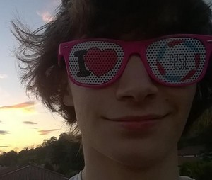

A propos de l'auteur
- Emilio STAROPOLI
- Né le 09/11/1997 à Lyon
- Habite a Villeurbanne
- 1m69 et demi
- Pointure: 42
- Centres d'intérêt
- Programmation et informatique en général
- Musique (électronique, dub, reggae, rock, électro-acoustique expérimentale), je joue
de la basse et
suis débutant en MAO
- Dessin et graphisme: j'envisage une possible poursuite d'études en infographie
- Jeux vidéos
- Communication
